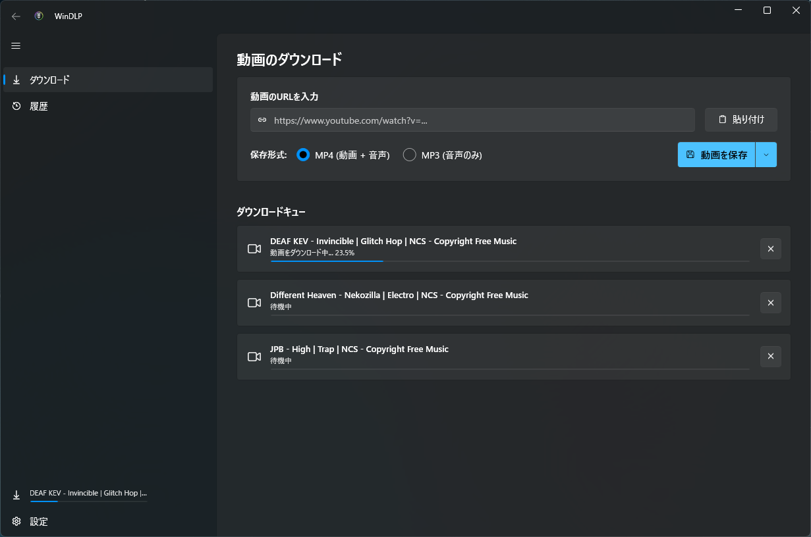

v1.0 リリース
動画ダウンロードを、
もっと美しく、シンプルに。
WinDLPは、強力なコマンドラインツール yt-dlp のパワーを、Windows 11の美しい Fluent Design に融合したデスクトップアプリケーションです。設定不要で、動画や音声を数クリックでダウンロードできます。
WinDLP をダウンロード
Windows 10 / 11 対応 (.msi)

FEATURES
主な特徴
WinDLPは、シンプルで直感的な操作感と、強力なダウンロード機能を両立しています。
直感的なダウンロード
URLを貼り付けるだけで、動画情報を自動解析。お好みの解像度やフォーマット（MP4, MP3など）を瞬時に選択してダウンロードできます。
Fluent Design
Windows 11の「Mica効果」や角丸UIを採用。デスクトップとシームレスに統合し、馴染むように調和する美しいインターフェースを提供します。
履歴管理システム
過去にダウンロードした動画の履歴を一覧で表示。同じソースから再取得したり、過去の作業内容をいつでも簡単に振り返ることができます。
リアルタイム進捗
ダウンロード速度や残り時間、ファイルサイズなどをリアルタイムで計算・表示。バックグラウンドでの動作状況も進捗バーで一目瞭然です。
HOW TO USE
使い方
わずか3ステップで、お気に入りの動画を保存できます。
01
WinDLPをインストール
本ページからインストーラー（.msi）をダウンロードし、起動します。画面の指示に従ってインストールを完了してください。
02
動画のURLを入力
ダウンロードしたいYouTubeやその他の対応サイトの動画URLをコピーし、WinDLPの入力欄に貼り付けます。
03
フォーマットを選択して開始
動画または音声の品質を選択し、「ダウンロード」ボタンをクリックします。進捗バーが100%になれば保存完了です。
システム要件
- OS: Windows 10 (1809以降) / Windows 11 (64-bit)
- Runtime: .NET Desktop Runtime 10.0以降
- ネット接続: インターネット接続環境 (必須)
yt-dlpについて
WinDLPは、バックエンドとして yt-dlp を使用しています。アプリの初回起動時に最新のバイナリが自動的にダウンロードされるため、ユーザー側で個別の導入や設定作業は一切必要ありません。